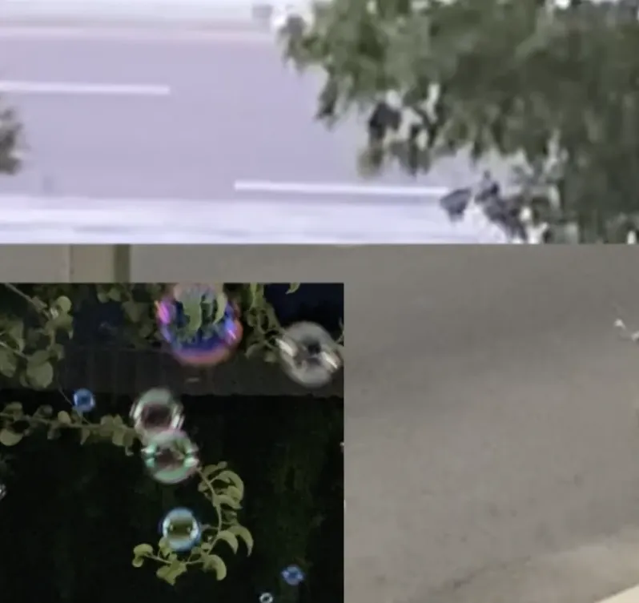

 Menu
Menu
Jolda
Experimental film
2024
This video is set to the song of the same name by the Kazakhstani musician yourfriendkas. Jolda—on the road/on the way—is where I often find myself, both literally and as part of my identity: in constant motion, amidst various processes, at crossroads. This video is a collage of footage from my archive, including videos shot in Tashkent and Bukhara (Uz), Almaty and Balqash (Kz), and on the roads between them.
Видео